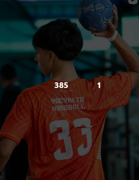
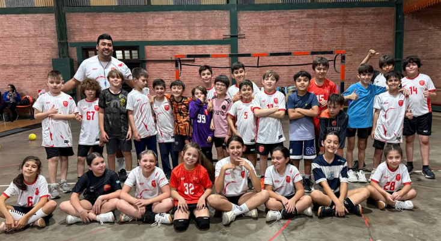
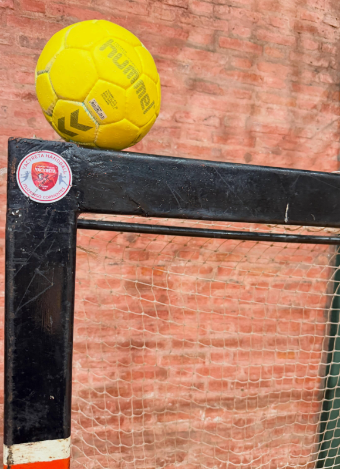
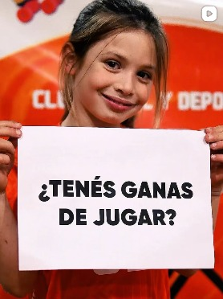
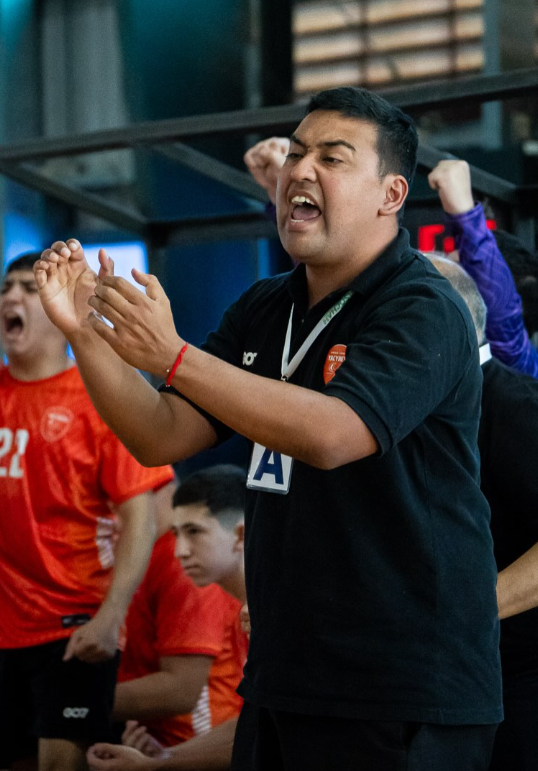
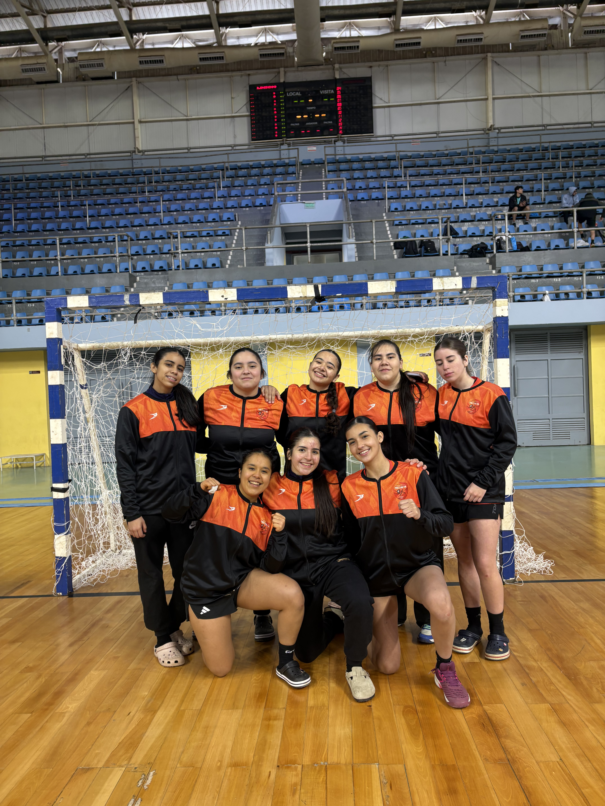
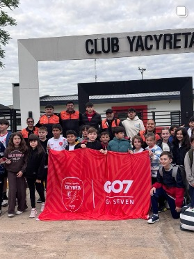
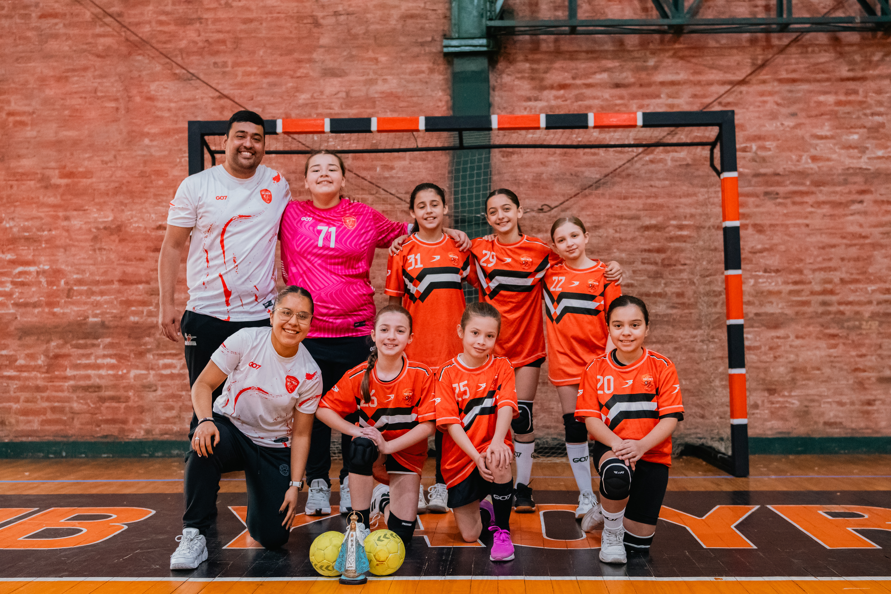
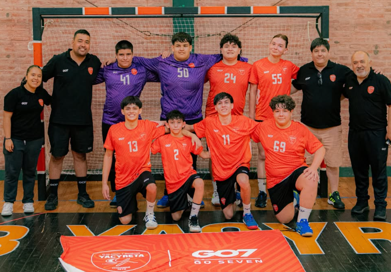

01 / EN CANCHA
JUEGO Y PASIÓN
Cada ataque es una oportunidad. Cada defensa, un compromiso.
 YACYRETÁHANDBALL
YACYRETÁHANDBALL
Una camiseta. Un equipo. Una pasión que se vive dentro y fuera de la cancha. Esto es handball, esto es Yacyretá.

En Yacyretá Handball, cada pase, cada defensa y cada gol se viven en equipo. Representamos a Ituzaingó con los colores naranja, negro y blanco, y con la energía de quienes aman este deporte.
Velocidad, táctica, entrega y compañerismo. Un deporte que se juega con las manos y se siente con todo el corazón.

Cada ataque es una oportunidad. Cada defensa, un compromiso.

Compartimos entrenamientos, experiencias y desafíos.

La pasión por el handball también se construye desde chicos.
Imágenes compartidas por el equipo: partidos, compañeros, formación y pasión por estos colores.





Fotografías recortadas de las capturas de Instagram compartidas como referencia.
EN LA CANCHA
Cadetes · Resistencia. Chaco
9 al 14 de Noviembre
6° puesto y ASCENSO
Cadetes femenino · Formosa capital
3 al 5 de Julio
5° puesto
Cadetes masculino · Ituzaingó Corrientes
24 y 25 de Octubre
3° puesto
¿Querés conocer más sobre Yacyretá Handball, sus actividades o categorías? Escribinos por Instagram.